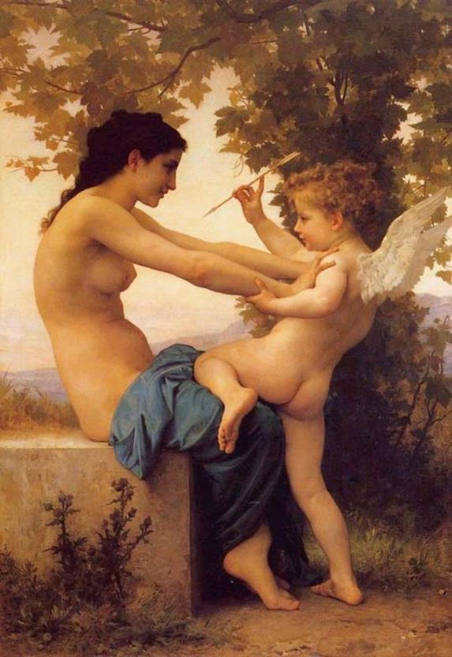

Trong gia tài thần thoại Hy Lạp và La Mã, bên nữ thần Tình yêu và Sắc đẹp Aphrodite còn có những thần Tình yêu: Éros, Amour, Cupidon. Lai lịch các vị thần này như thế nào, các vị làm gì, được thế giới Olympe trao cho sứ mạng gì để xuống trần góp một tay điều hành thế giới loài người trần tục, đoản mệnh chúng ta?

Aphrodite và Éros
Về Éros như trên đã kể, là một vị thần Tình yêu ra đời từ chốn hư không, hỗn mang Chaos cùng với Trời-Ouranos và Đất-Gaia. Éros được người xưa coi là một trong những ngọn nguồn của sự sống và thế gian. Sau này một nguồn khác lại coi Éros là con trai của Arès với Aphrodite, hoặc của Zeus với Aphrodite, của Hermès với Aphrodite, của Hermès với Zéphyr, với Iris. Lại có chuyện kể Éros là con của Apollon với Aphrodite. Tục truyền rằng khi Éros ra đời, thần Zeus vì một sự tính toán lo xa định giết chết tươi đứa bé, Zeus nghĩ: “Bố nó đã là một thiện xạ bách phát bách trúng, cô ruột nó cũng lại là một xạ thủ danh tiếng lẫy lừng, bây giờ lại thêm nó nữa thì thế giới thiên đình và loài người có ngày rối tung rồi mù lên, đảo lộn tất cả!” Nhưng Aphrodite biết trước ý đồ của Zeus. Nàng đem con giấu vào rừng, giấu vào tận một khu rừng già sâu thẳm chưa từng có bóng người lai vãng. Những con sư tử cái đem sữa của mình nuôi chú bé Éros. Lớn lên chú bé được bố cho một cây cung bạc và một ống tên vàng. Với đôi cánh rực rỡ, chú bay khắp đó đây, dùng tên của mình bắn vào trái tim những chàng trai và những cô gái. Cứ thấy có chàng trai và cô gái nào là Éros giương cung lên, bắn. Những mũi tên vô hình của Éros xuyên vào trái tim các chàng trai và những cô gái. Vì thế họ yêu nhau. Họ phải yêu nhau vì họ đã bị những mũi tên vô hình của thần Tình yêu-Éros bắn phải. Chẳng ai lẩn tránh được những mũi tên đó vì nó vô hình, vì nó bay dọc ngang khắp trời đất, vì chẳng ai biết được thần Tình yêu-Éros bắn vào lúc nào. Vì những mũi tên vô hình nên nó cũng gây cho các chàng trai và những cô gái một nỗi đau đớn vô hình. Kể từ khi bị trúng tên là trong người bứt rứt, bồn chồn, trái tim lúc xót như muối, lúc mềm như dưa, lúc nóng sôi lên sùng sục, dâng dâng như nước triều lên. Có khi lại lạnh buốt, nhức nhối hoặc cạn trơ ra như lúc nước triều rút. Tai hại hơn nữa có khi “chết” mất một tý trong tim, thậm chí, hơn nữa, chết cả cuộc đời, vĩnh viễn giã từ cuộc sống. Đó là tai họa mà chú thiếu niên Éros tinh nghịch giáng xuống cho loài người. Nhưng cũng nhờ sự tinh nghịch của chú mà loài người là... loài người. Chú chẳng bắn một mũi tên nào cho con lợn, con bò, con chó, con gà... cả, do đó bọn chúng chỉ “làm tình” mà chẳng thể có tình yêu với những sướng vui và khổ đau mà chỉ riêng loài người mới có. Xét như thế thì loài người đoản mệnh chúng ta cũng không nên oán trách thần Tình yêu-Éros đã buộc “dây oan” vào loài người chúng ta. Và như vậy thì âu là cái tai họa mà Éros đã giáng xuống cho loài người cũng là một niềm hạnh phúc.
Như vậy, Éros đã được mở rộng nghĩa. Từ chỗ là Tình yêu như là một quy luật tác động của âm dương, trời đất, vạn vật, muôn loài làm nẩy sinh ra sự sống đến chỗ như là một quy luật gây ra những xúc động mạnh mẽ, phức tạp (có thể là mạnh mẽ nhất, phức tạp nhất) trong thế giới tâm hồn con người, thần thoại Hy Lạp đã cho chúng ta thấy sự phong phú và sâu sắc trong cái tư duy ấu trĩ, ngây thơ của nhân loại đang khao khát nhận thức thế giới. Thời cổ đại tạc tượng Éros là một chú thiếu niên có cánh vai đeo ống tên, tay cầm cung hoặc có khi tay cầm đuốc. Với bó đuốc thần đó, Éros làm bùng cháy lên trong trái tim con người những dục vọng say đắm của tình yêu. Và như vậy mặc dù lai lịch về đằng bố có hơi phức tạp nhưng về đằng mẹ thì chắc chắn Éros là con của nữ thần Tình yêu-Aphrodite124.
Trong thời kỳ Hy Lạp hóa (thế kỷ IV TCN) xuất hiện nhiều vị thần tình yêu. Tiếp đến thần thoại La Mã ra đời trên cơ sở mô phỏng, chế biến tái tạo lại thần thoại Hy Lạp do đó cũng lại đẻ ra nhiều vị thần tình yêu. Ngoài Vénus còn có Amour, Cupidon. Thật ra những vị thần này không có gì khác Éros. Tuy nhiên trong nghệ thuật tạo hình chúng ta thấy có đôi nét khác. Thần Cupidon hoặc Amour thường được thể hiện là một chú bé (chứ không phải một chú thiếu niên hoặc một chàng thiếu niên) với thân hình bụ bẫm và vẻ mặt tinh nghịch, có cánh, khi cầm cung đeo ống tên, khi cầm đuốc, có khi không cầm gì cả. Ở một số tranh các nghệ sĩ vẽ nhiều thần Amour hoặc Cupidon cùng một lúc. Trong những tranh ấy với lối thể hiện như vậy, thần Tình yêu mang ý nghĩa tượng trưng cho mùa xuân và sức sống. Có trường hợp người ta thể hiện thần Amour là một thiếu niên có cánh, hai tay cầm hai vòng hoa, dường như để trao tặng cho những đôi trai gái nào đã vượt qua được những rụt rè, e thẹn, sợ hãi lúc đầu, kể cả những khó khăn, rắc rối, những trở ngại mà không ai lường hết được, để yêu nhau, coi đó như là một thắng lợi của mình: Tình yêu.
[124] Ngày nay trong tiếng Pháp có từ “Aphrodisiaque”, gốc từ tiếng Hy Lạp “Aphrodisiakos”, với nghĩa là: (1) kích thích khêu gợi tình dục (érotisme, érotique); (2) tình dục, thói ham mê tình dục, thói đa tình, tình yêu dâm dục, dâm đãng.